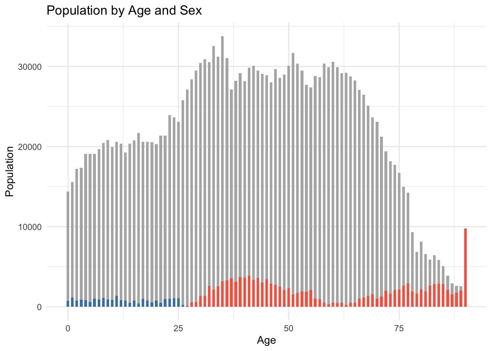
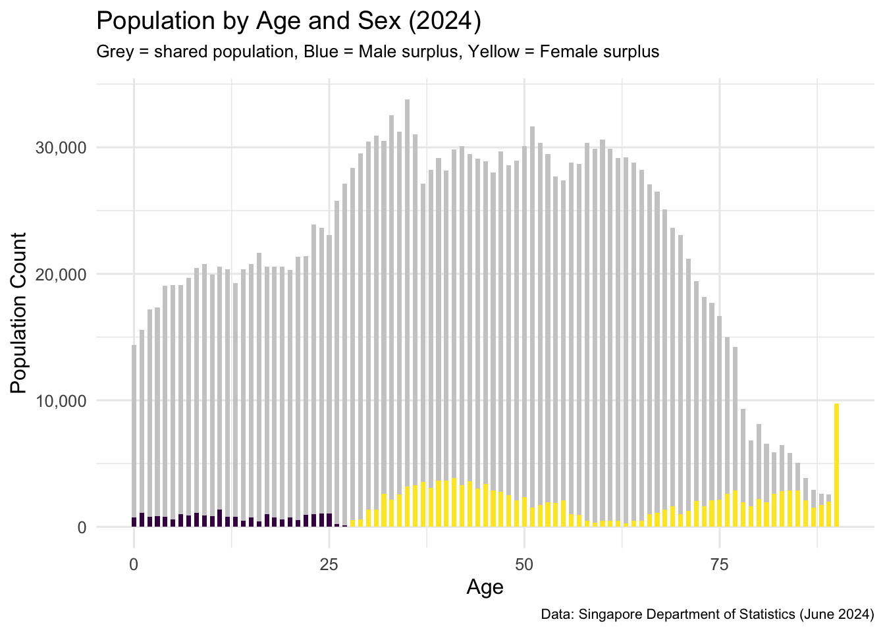
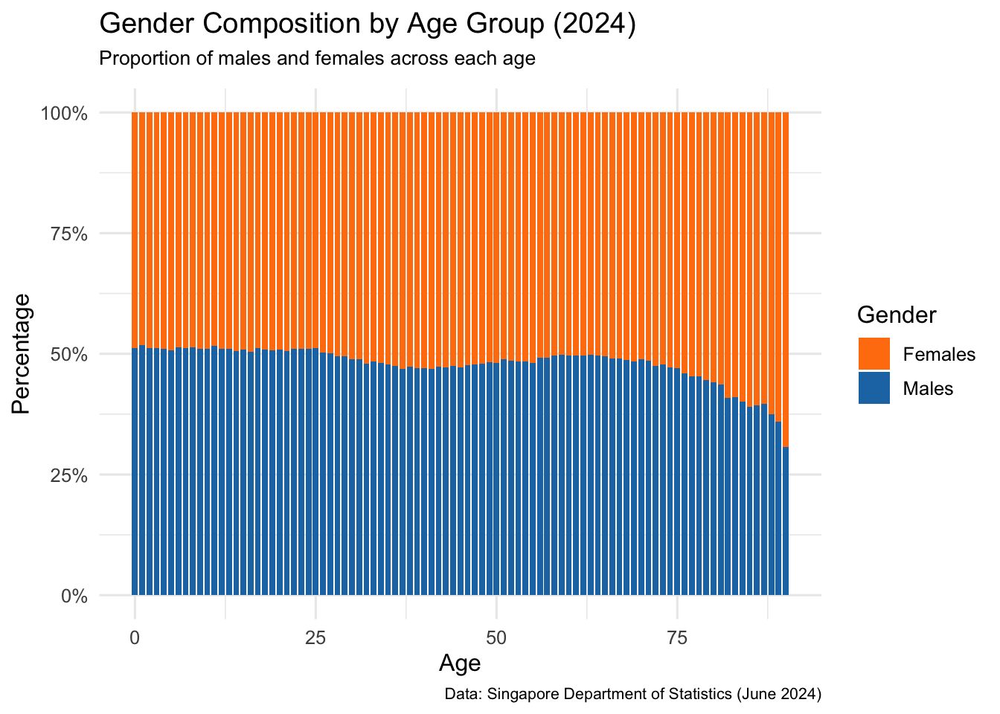
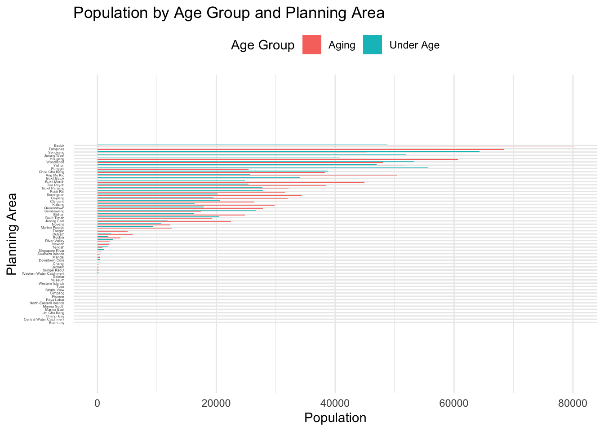
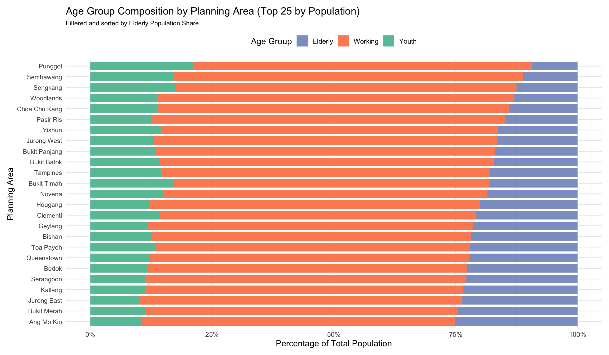

pacman::p_load(ggiraph, plotly,
patchwork, DT, tidyverse) Take-home Exercise 1 - Phrase 2:
Peer Review and Makeover
Peer Review of Yuan Yihao’s Take-home Exercise 1 - Phrase 2
1. Overview of Yihao’s Work and Data Preparation
Yihao’s take-home exercise investigates Singapore’s 2024 demographic structure through three visualisations:
Population by Age and Sex
Population by Age Group and Planning Area
Aging-to-Under-Age Population Ratio by Planning Area
These charts aim to explore gender imbalances across age groups, assess regional aging patterns, and evaluate the relative burden of aging populations.
For this peer review, I will focus on the first two visualisations only — Population by Age and Sex, and Population by Age Group and Planning Area — as they demonstrate distinct perspectives on demographic segmentation and regional trends.
Yihao’s data preparation is methodical and well-documented. The dataset was imported using read_csv() from the Department of Statistics Singapore. Key preprocessing steps include converting Age and Pop to numeric, recoding "90_and_Over" to "90", and verifying missing values using colSums(is.na(...)). These steps provide a clean and structured foundation for subsequent visual analysis.
res_data <- read_csv("data/data.csv")res_data %>% filter(if_any(everything(), is.na))# A tibble: 0 × 6
# ℹ 6 variables: PA <chr>, SZ <chr>, Age <chr>, Sex <chr>, Pop <dbl>,
# Time <dbl>colSums(is.na(res_data)) PA SZ Age Sex Pop Time
0 0 0 0 0 0 res_data <- res_data %>%
mutate(Age = ifelse(Age == "90_and_Over", "90", Age),
Age = as.numeric(Age))
str(res_data)tibble [60,424 × 6] (S3: tbl_df/tbl/data.frame)
$ PA : chr [1:60424] "Ang Mo Kio" "Ang Mo Kio" "Ang Mo Kio" "Ang Mo Kio" ...
$ SZ : chr [1:60424] "Ang Mo Kio Town Centre" "Ang Mo Kio Town Centre" "Ang Mo Kio Town Centre" "Ang Mo Kio Town Centre" ...
$ Age : num [1:60424] 0 0 1 1 2 2 3 3 4 4 ...
$ Sex : chr [1:60424] "Males" "Females" "Males" "Females" ...
$ Pop : num [1:60424] 10 10 10 10 10 10 10 10 30 10 ...
$ Time: num [1:60424] 2024 2024 2024 2024 2024 ...res_data <- res_data %>%
mutate(
Age = as.numeric(Age),
Pop = as.numeric(Pop)
)
str(res_data)tibble [60,424 × 6] (S3: tbl_df/tbl/data.frame)
$ PA : chr [1:60424] "Ang Mo Kio" "Ang Mo Kio" "Ang Mo Kio" "Ang Mo Kio" ...
$ SZ : chr [1:60424] "Ang Mo Kio Town Centre" "Ang Mo Kio Town Centre" "Ang Mo Kio Town Centre" "Ang Mo Kio Town Centre" ...
$ Age : num [1:60424] 0 0 1 1 2 2 3 3 4 4 ...
$ Sex : chr [1:60424] "Males" "Females" "Males" "Females" ...
$ Pop : num [1:60424] 10 10 10 10 10 10 10 10 30 10 ...
$ Time: num [1:60424] 2024 2024 2024 2024 2024 ...2. Exploratory Visual Analysis
EVA 1: Population by Age and Sex
Strengths:
Innovative Visual Encoding
Yihao’s use of layered colored bars over a grey baseline to compare male and female populations by age is a creative and effective technique. It visually emphasizes gender differences in a way that is immediately understandable.
Clear Trend Identification
The chart successfully highlights a demographic pattern: males dominate in younger age groups (0–30), while females outnumber males in older age bands (30–90+). This is both accurately computed and clearly observed in the visual.
Efficient Data Transformation
The process of reshaping the data using pivot_wider() and calculating male_extra and female_extra is handled cleanly. This preprocessing step sets the stage for the layered visualisation approach.
Click to view code
library(dplyr)
library(ggplot2)
grouped_data <- res_data %>%
group_by(Age, Sex) %>%
summarise(Pop = sum(Pop, na.rm = TRUE), .groups = "drop")
wide_data <- grouped_data %>%
pivot_wider(names_from = Sex, values_from = Pop, values_fill = 0) %>%
mutate(
min_pop = pmin(Males, Females),
male_extra = ifelse(Males > Females, Males - Females, 0),
female_extra = ifelse(Females > Males, Females - Males, 0)
)
ggplot() +
geom_col(data = wide_data, aes(x = Age, y = min_pop),
fill = "gray70", width = 0.6) +
geom_col(data = wide_data, aes(x = Age, y = male_extra),
fill = "steelblue", width = 0.6) +
geom_col(data = wide_data, aes(x = Age, y = female_extra),
fill = "tomato", width = 0.6) +
labs(
title = "Population by Age and Sex",
x = "Age",
y = "Population"
) +
theme_minimal()
Click to view code
library(dplyr)
library(ggplot2)
library(scales)
library(viridisLite)
grouped_data <- res_data %>%
group_by(Age, Sex) %>%
summarise(Pop = sum(Pop, na.rm = TRUE), .groups = "drop")
wide_data <- grouped_data %>%
pivot_wider(names_from = Sex, values_from = Pop, values_fill = 0) %>%
mutate(
min_pop = pmin(Males, Females),
male_extra = ifelse(Males > Females, Males - Females, 0),
female_extra = ifelse(Females > Males, Females - Males, 0)
)
ggplot() +
geom_col(data = wide_data, aes(x = Age, y = min_pop),
fill = "grey80", width = 0.6) +
geom_col(data = wide_data, aes(x = Age, y = male_extra),
fill = viridis(3)[1], width = 0.6) +
geom_col(data = wide_data, aes(x = Age, y = female_extra),
fill = viridis(3)[3], width = 0.6) +
labs(
title = "Population by Age and Sex (2024)",
subtitle = "Grey = shared population, Blue = Male surplus, Yellow = Female surplus",
x = "Age",
y = "Population Count",
caption = "Data: Singapore Department of Statistics (June 2024)"
) +
scale_y_continuous(labels = comma) +
theme_minimal(base_size = 12) +
theme(
plot.subtitle = element_text(size = 10, margin = margin(b = 10)),
plot.caption = element_text(size = 8)
)
This chart shows the relative percentage of male and female residents across each age group. The data was first grouped by age and sex, then the population in each sex group was divided by the total population in that age to compute the gender composition.
Unlike the earlier visual (which showed raw population differences), this version uses a normalized scale (0–100%). It allows readers to clearly see which age groups are more gender-balanced and where one gender dominates in proportion — regardless of actual size.
Ages 0–29 show a slight male majority, indicating male-dominant birth cohorts or younger male migration.
From age 30 onwards, females increasingly dominate, especially beyond age 60 — a pattern consistent with higher female life expectancy.
The crossover point — where the female proportion begins to exceed male — occurs around age 30, reinforcing the findings from the earlier absolute comparison chart.
This proportional view enhances the demographic story by highlighting gender imbalance dynamics relative to each age group, useful for understanding long-term trends in healthcare demand and social support planning.
Click to view code
composition_data <- res_data %>%
group_by(Age, Sex) %>%
summarise(Pop = sum(Pop, na.rm = TRUE), .groups = "drop") %>%
group_by(Age) %>%
mutate(Percent = Pop / sum(Pop)) %>%
ungroup()
ggplot(composition_data, aes(x = Age, y = Percent, fill = Sex)) +
geom_col(position = "fill", width = 0.8) +
scale_fill_manual(values = c("Males" = "#1f77b4", "Females" = "#ff7f0e")) +
scale_y_continuous(labels = scales::percent_format(accuracy = 1)) +
labs(
title = "Gender Composition by Age Group (2024)",
subtitle = "Proportion of males and females across each age",
x = "Age",
y = "Percentage",
fill = "Gender",
caption = "Data: Singapore Department of Statistics (June 2024)"
) +
theme_minimal(base_size = 12) +
theme(
plot.subtitle = element_text(size = 10, margin = margin(b = 10)),
plot.caption = element_text(size = 8)
)
Suggestions for Improvement
Add a Clear Legend or Annotation
While the color scheme is intuitive (steelblue for males, tomato for females), the chart lacks a legend or explicit note explaining what the colors represent. Adding a legend would enhance interpretability.
Enhance Visual Accessibility
Consider using a color-blind friendly palette or patterns to differentiate between the bars. This ensures accessibility for all readers.
Include a Normalized Comparison Option
While the visual shows absolute differences, adding a secondary visual or facet that presents percentage distribution by age group (e.g., % males vs. % females per age) could provide additional analytical value.
EVA 2: Population by Age Group and Planning Area
Strengths:
Clear Age Segmentation Strategy
Yihao categorizes age into three intuitive groups — Under Age, Adult, and Aging. This simplifies the analysis and allows for high-level comparisons across planning areas.
Clean and Readable Bar Chart Design
The horizontal bar chart layout, with planning areas on the y-axis, is a smart choice for comparing numerous geographic areas. The ordering of bars by population supports fast scanning of highest and lowest regions.
Additional Ratio Analysis
Yihao extends the analysis beyond counts by calculating the Aging-to-Under-Age Ratio, offering deeper insights into demographic pressure. This demonstrates good analytical thinking beyond surface-level observations.
Click to view code
res_data_grouped <- res_data %>%
mutate(AgeGroup = case_when(
Age >= 0 & Age <= 20 ~ "Under Age",
Age >= 21 & Age <= 60 ~ "Adult",
Age >= 61 ~ "Aging"
)) %>%
group_by(PA, AgeGroup) %>%
summarise(Pop = sum(Pop, na.rm = TRUE), .groups = "drop")
res_data_grouped_filtered <- res_data_grouped %>%
filter(AgeGroup != "Adult")
ggplot(res_data_grouped_filtered, aes(x = Pop, y = reorder(PA, Pop), fill = AgeGroup)) +
geom_col(position = position_dodge(width = 0.9), width = 0.4) +
labs(
title = "Population by Age Group and Planning Area",
x = "Population",
y = "Planning Area",
fill = "Age Group"
) +
scale_y_discrete(expand = expansion(mult = c(0.4, 0.4))) +
theme_minimal() +
theme(
axis.text.y = element_text(size = 3, margin = margin(r = 5)),
legend.position = "top"
)
Click to view code
library(dplyr)
library(ggplot2)
library(scales)
res_data_grouped <- res_data %>%
mutate(
AgeGroup = case_when(
Age <= 14 ~ "Youth",
Age >= 65 ~ "Elderly",
TRUE ~ "Working"
)
) %>%
group_by(PA, AgeGroup) %>%
summarise(Pop = sum(Pop, na.rm = TRUE), .groups = "drop") %>%
filter(!is.na(PA), !is.na(AgeGroup))
pa_top25 <- res_data_grouped %>%
group_by(PA) %>%
summarise(Total = sum(Pop)) %>%
arrange(desc(Total)) %>%
slice_head(n = 25) %>%
pull(PA)
res_data_percent <- res_data_grouped %>%
filter(PA %in% pa_top25) %>%
group_by(PA) %>%
mutate(Percent = Pop / sum(Pop)) %>%
ungroup()
elderly_order <- res_data_percent %>%
filter(AgeGroup == "Elderly") %>%
arrange(desc(Percent)) %>%
pull(PA)
res_data_percent$PA <- factor(res_data_percent$PA, levels = elderly_order)
ggplot(res_data_percent, aes(x = PA, y = Percent, fill = AgeGroup)) +
geom_col(width = 0.8) +
coord_flip() +
scale_y_continuous(labels = percent_format(accuracy = 1)) +
scale_fill_manual(values = c("Youth" = "#66c2a5", "Working" = "#fc8d62", "Elderly" = "#8da0cb")) +
labs(
title = "Age Group Composition by Planning Area (Top 25 by Population)",
subtitle = "Filtered and sorted by Elderly Population Share",
x = "Planning Area",
y = "Percentage of Total Population",
fill = "Age Group"
) +
theme_minimal(base_size = 12) +
theme(
axis.text.y = element_text(size = 9),
legend.position = "top",
plot.subtitle = element_text(size = 9),
plot.margin = margin(10, 10, 10, 10)
)
Suggestions for Improvement
Refined Age Group Boundaries
Age categories were updated to follow standard definitions:
Youth: 0–14
Working: 15–64
Elderly: 65+ This ensures alignment with demographic research and public policy frameworks.
Improved Visual Readability
The chart was filtered to show only the top 25 most populated planning areas to reduce clutter. Font size for axis labels was increased (size = 9) and coord_flip() was applied to present the labels horizontally, improving label legibility.
Incorporated Proportional Representation
Instead of plotting absolute values, the chart now shows percentage composition by age group using a 100% stacked bar format. This enables fairer comparison across areas with different total population sizes and highlights structural age group differences.
Reordered Planning Areas by Elderly Share
The bars were sorted based on the proportion of elderly residents in each area, which strengthens the narrative focus and draws attention to aging population hotspots.
Applied Colorblind-Friendly Palette
Manual color selection was updated using a palette suitable for broader accessibility, improving visual contrast between age groups.